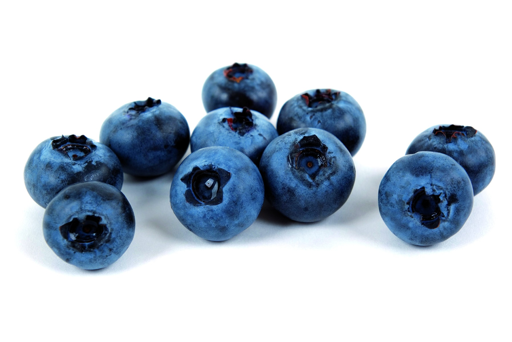

You will be given 3 tasks to complete with a time limit and a score.
If you do not complete a task in time, you will be sent back here to start over.
Once you compelte one task you can move on to the next.

1
This Task will have you find the pint of blueberries for sale on the website!
Be careful of where you click, and keep your eyes peeled. Task One!